Upload Program to ESP32 S3 Camera Module
This section provides detailed instructions on how to upload the program to the ESP32 S3 Camera Module.
There are two methods to upload code to the ESP32 S3 Camera Module:
Option 1: Using the Arduino IDE
Step 1: Install Arduino IDE
Go to https://www.arduino.cc/en/Main/Software and you will see the following page.
The version available at this website is usually the latest version, and the actual version may be newer than the version in the picture.
If you have already installed the Arduino IDE, you can skip this step and continue to the next step.
{kind=link}
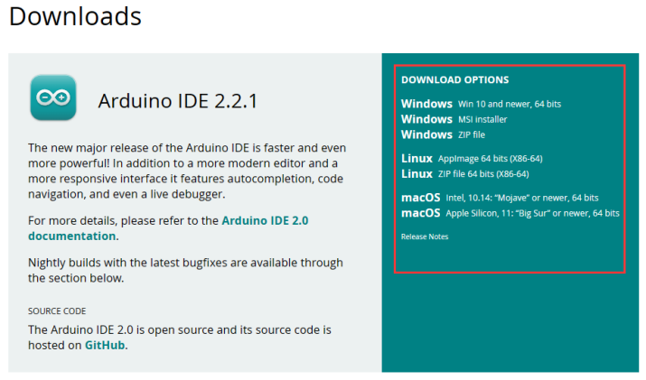
Step 2: Install CH340 Driver
If your computer can detect the USB-SERIAL CH340 (COMx) port, it means the CH340 driver is already installed on your system, and you can skip this step directly.
{kind=link}
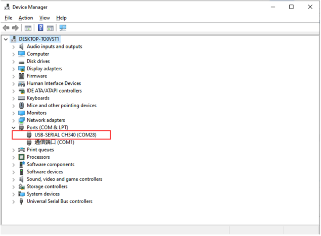
If your computer does not automatically recognize the board(as shown in the picture), you may need to install the CH340 driver.
{kind=link}
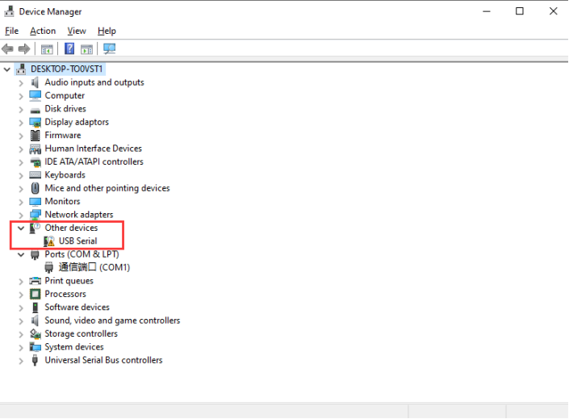
Follow the steps below to install the CH340 driver:
①: Downloading the driver
First, download the CH340 driver from the this link. Windows CH340 Driver
You can also download the latest version of the driver directly from the manufacturer’s site
{kind=link}
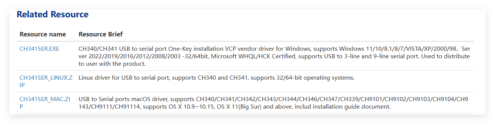
②: Installing the driver
After downloading the driver, open it and click Install.
Note
Tip: Before installing the driver software, you must connect the Arduino board to your computer with a USB cable.
{kind=link}
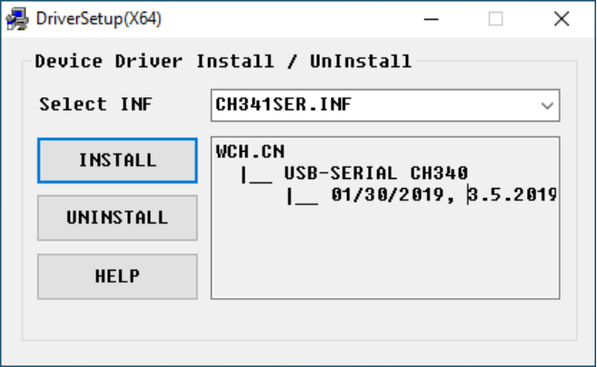
After successful installation you should see this message
{kind=link}
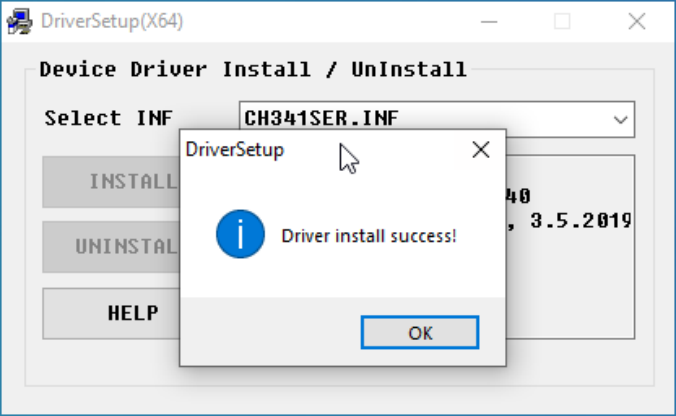
Note：In some cases, you may need to reset Windows after the driver installation is complete.
③: Checking Correct Driver Installation in Device Manager
If your driver has been installed correctly, and you connect your board to your computer, you will see its name and port number listed in the Ports section of Device Manager. For example, your Arduino board may show up as connected to COM28.
④: Verify Installation in the Arduino IDE
Open the Arduino IDE -> Tools -> Port -> COM28. This ensures the IDE communicates with your Arduino board correctly.
{kind=link}
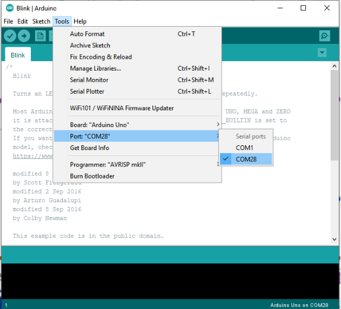
If you can’t find the CH340 device in Device Manager or Arduino IDE, the driver installation failed. Try uninstalling the driver, restarting your computer, and repeating the steps above.
{kind=link}
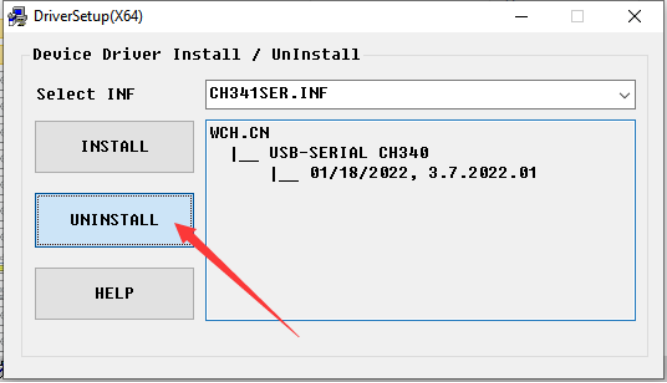
Step 3: Install The ESP32 Core Board Package
Add Additional Boards Manager URL
Open the Arduino IDE, click File → Preferences in the upper left corner, and copy and paste the following address into the Additional Board Manager URLs input box.
After entering the URL, click OK.
https://espressif.github.io/arduino-esp32/package_esp32_index_cn.json


Precaution
After completing this step, you need to close and reopen the Arduino IDE.
Download the ESP32 Core Package
Open the Arduino IDE, click the second icon on the left to open the BOARDS MANAGER page.
Enter ESP32 in the search box and press Enter.
Find the core package titled esp32 by Espressif Systems, select version 3.3.8 from the drop-down menu, and click Install to download and install it.
💡 Tip
If you have already installed another version, simply select version 3.3.8 and click the Update button.
Please wait for the download progress bar in the lower right corner to complete.
{kind=link}
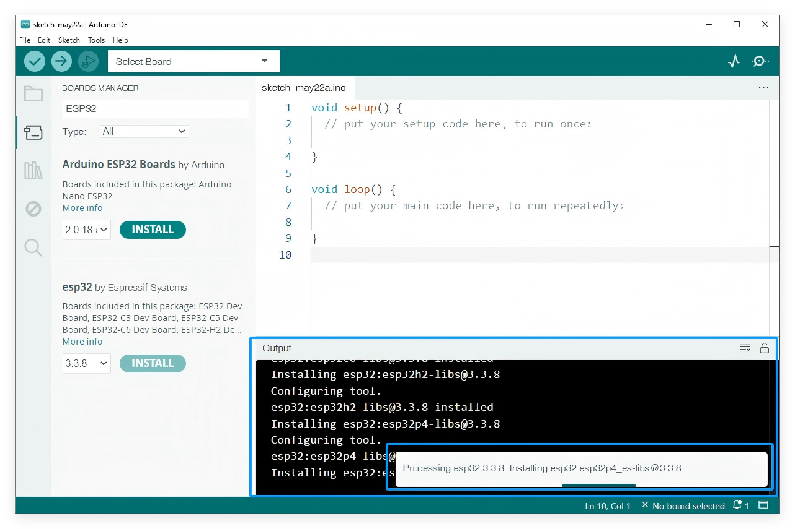
When the download is complete, the message Successfully installed platform esp32:3.3.8 will be displayed.
{kind=link}
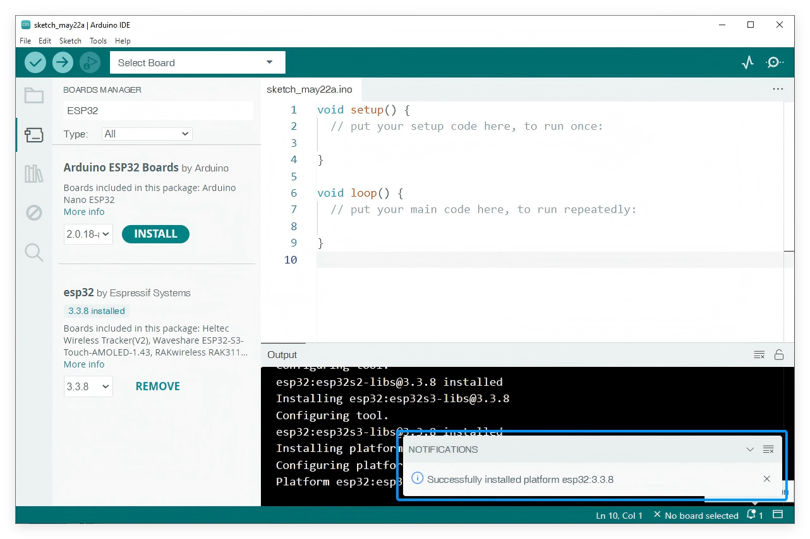
6. Check if the installation is successful: Click Tools → Board → esp32 to check whether an ESP32 development board is available for selection.

Precaution
We recommend installing ESP32 Core Package version 3.3.8, or using version 3.0 or later.
Older versions may be incompatible with the libraries used in this tutorial, causing program errors.
If you have an earlier version installed, uninstall it and then reinstall version 3.3.8 of the ESP32 Core Package.
Step 3: Upload Arduino UNO Main Code
① Load Main code into the Arduino IDE
Launch the Arduino IDE and navigate to File -> Open… in the menu bar, then locate and select the main program `SmartRobotCar_Main_V1.ino` from your downloaded resource folder.
{kind=link}
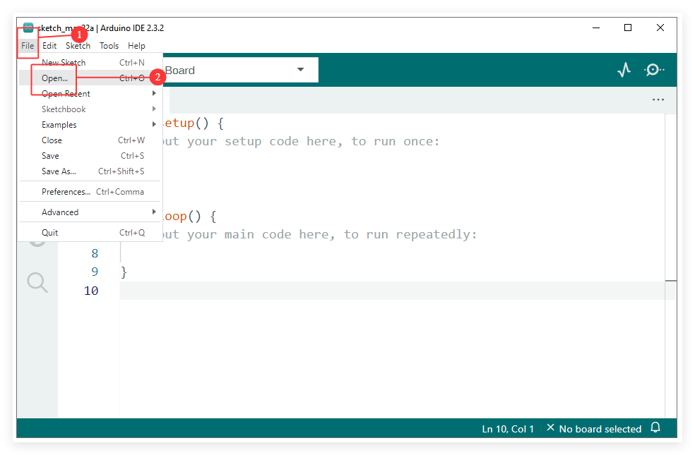
{kind=link}
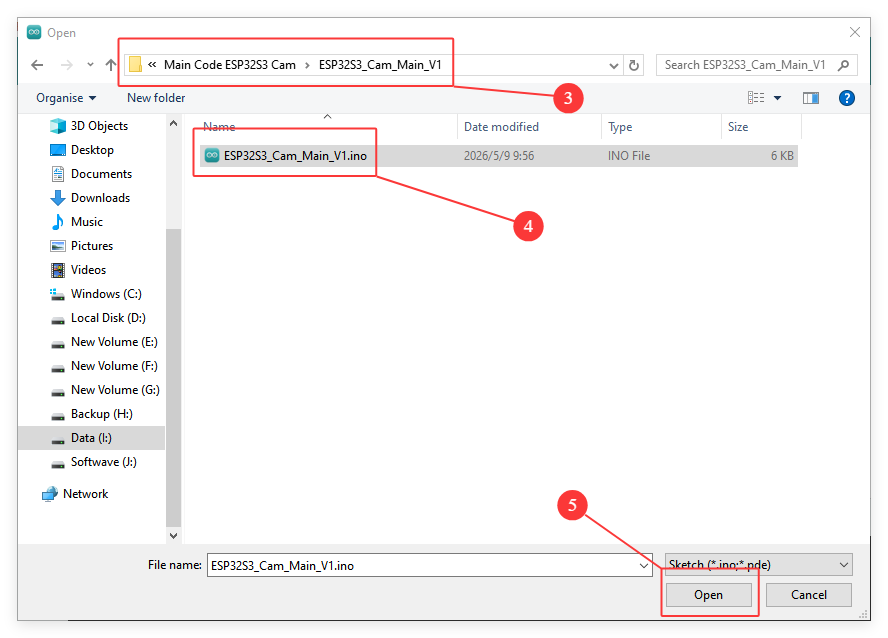
{kind=link}
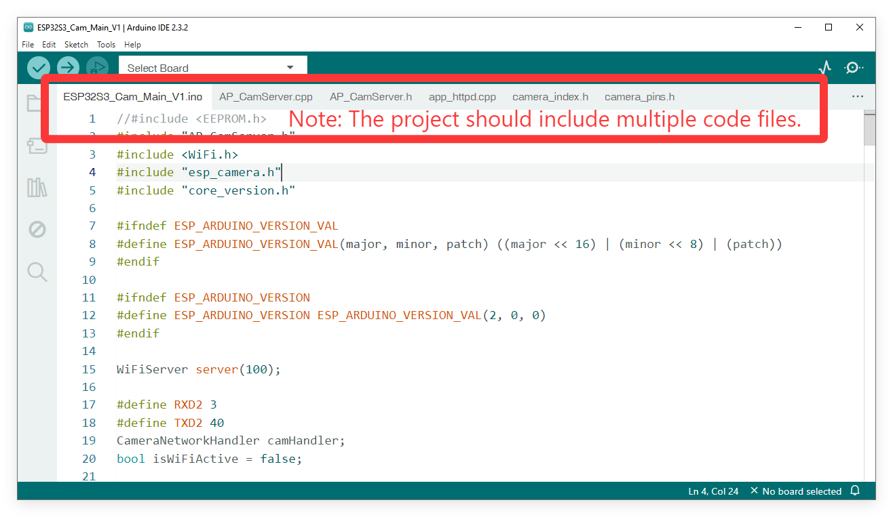
② Connect the ESP32 Camera Board to Your Computer
Connect the ESP32 Camera Board on the Smart Robot Car to your computer using the provided USB Type C cable.
{kind=link}
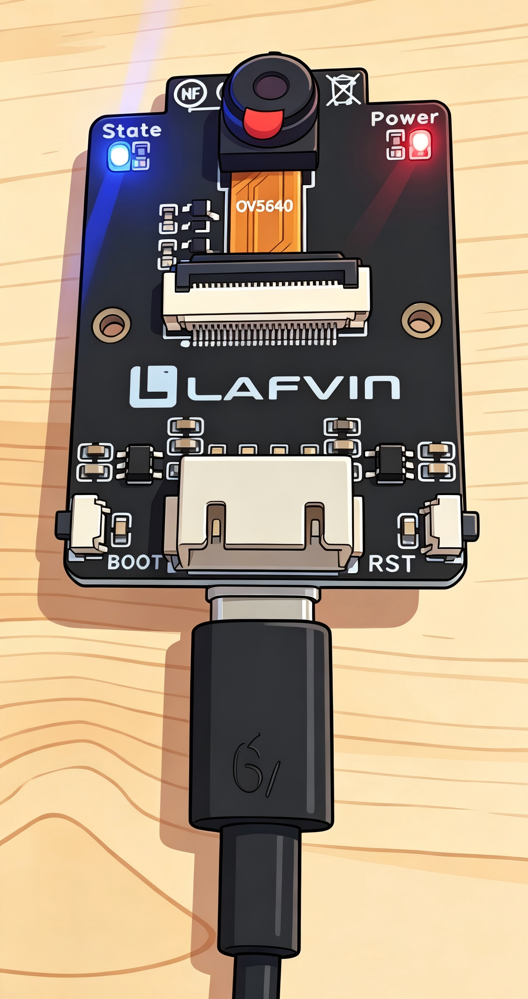
③ Configure the Board and Port
Go to Tools -> Board -> esp32**and select **ESP32S3 Dev Module.
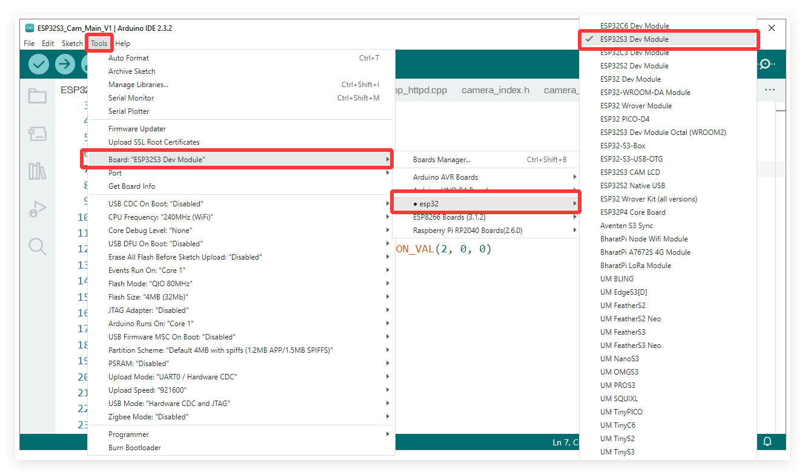
Go to Tools -> Port and select the COM port that corresponds to your connected ESP32S3 Camera.
Note
You can check the COM port number in Device Manager. For example, the COM port number of the ESP32S3 camera on my computer is COM34, and your port number may be different.
{kind=link}
{kind=link}
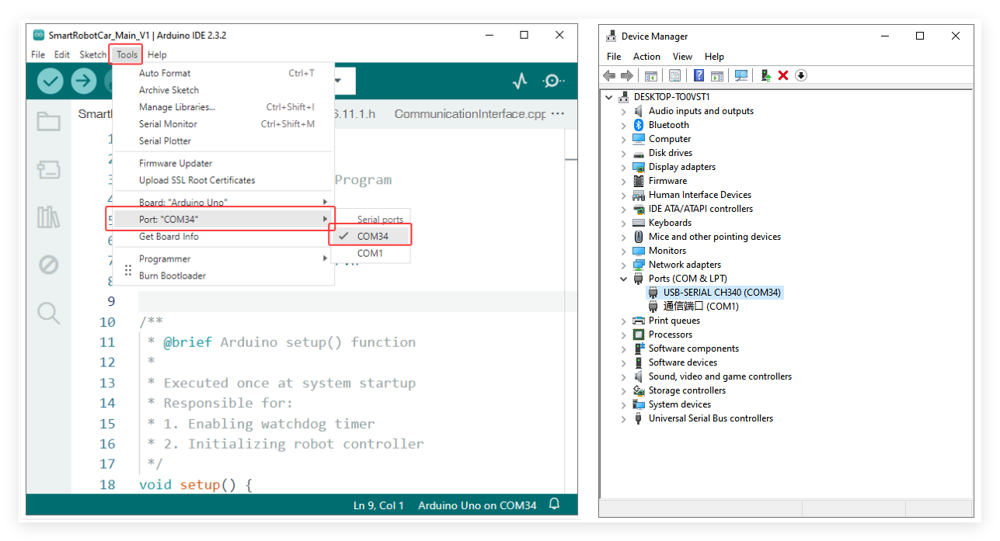
Go to Tools to configure all important settings
Required Board Configuration
Board —> ESP32S3 Dev Module
Flash Size —> 8MB(64Mb)
Partition Scheme —> 8M with spiffs (3MB APP/1.5MB SPIFFS)
Flash Mode —> QIO 80MHz
PSRAM —> OPI PSRAM
Upload Speed —> 921600
{kind=link}
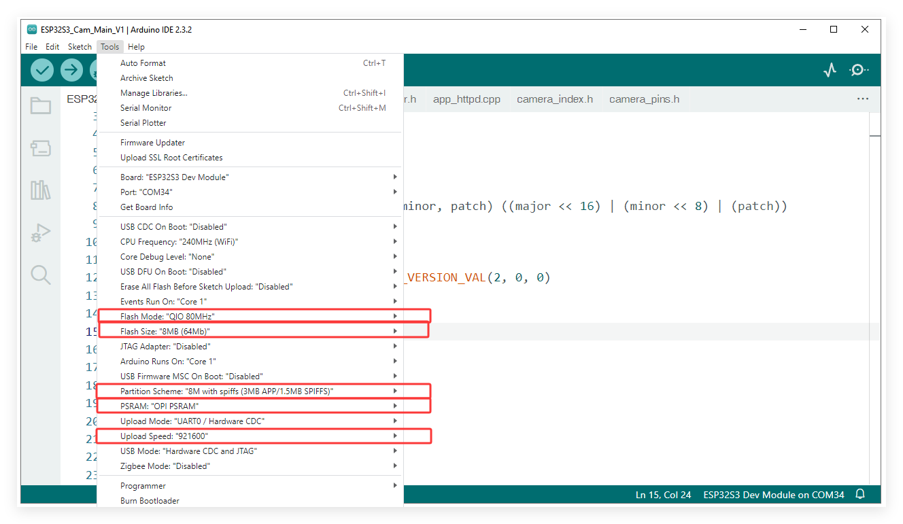
④ Upload the Code
Click the Upload button (the right-pointing arrow icon) located in the top-left corner of the Arduino IDE.
Wait for the IDE to compile and upload the sketch.
You should see a “Done uploading” message at the bottom of the IDE window when it is successful.
{kind=link}
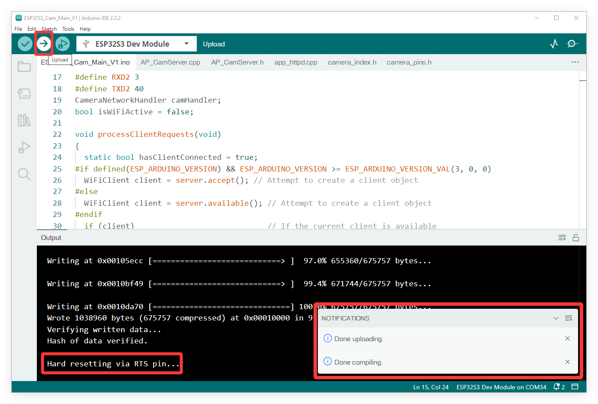
Option 2: Using the Flash Download Tool
Note
If you find the steps above too complex, or if you encounter unsolvable errors when flashing using the Arduino IDE, you can use Espressif’s official flash tool instead. We have packaged the complete program into a single .bin file, allowing you to directly flash the firmware to your ESP32 S3 camera module. This method eliminates the need to import libraries or download the ESP32 core package, enabling you to quickly complete the code upload process for the camera module.
Step 1: Prepare the Hardware
Connect the ESP32 S3 Camera Module to your computer using a USB Type-C cable.
If the ESP32S3 camera module is connected to the Robot car shield at the same time, make sure that the power switch on the shield is turned on.
Step 2: Install CH340 Driver
If your computer can detect the USB-SERIAL CH340 (COMx) port, it means the CH340 driver is already installed on your system, and you can skip this step directly.
{kind=link}
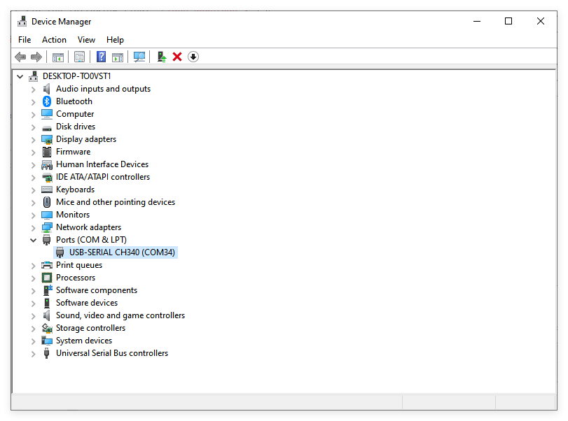
If your computer does not automatically recognize the board(as shown in the picture), you may need to install the CH340 driver.
Follow the steps below to install the CH340 driver:
step 3: Get flash download tool
You can find flash download tool in the provided resource folder.
Alternatively, you can download it via the following link: Flash Download Tool
After extracting the file, you will get the executable .exe file.
{kind=link}
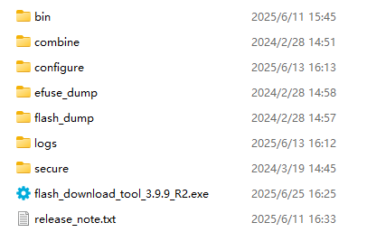
Step 4: Flash the .bin Firmware
Launch the flash_download_tool.exe, then in the pop-up window, select the following options in order:
Chip Type → ESP32-S3,
Work Mode → Develop,
Load Mode → UART.
{kind=link}
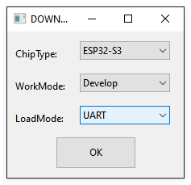
Set the flash tool parameters as follows:
{kind=link}
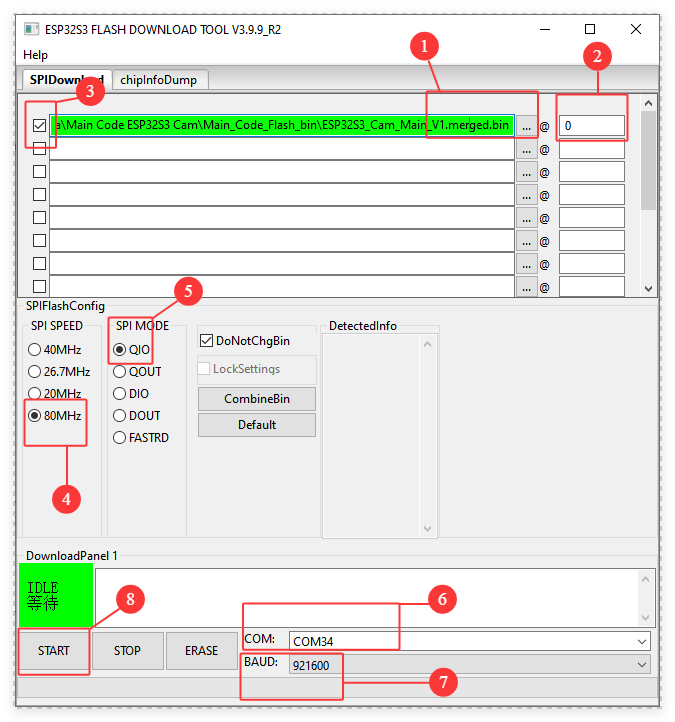
① Click the … button to select ESP32S3_Cam_Main_V1.merged.bin from the resource folder we provided.
Note: The file path must not be excessively long or contain special characters, as this will cause the upload to fail.
② Enter 0 as the memory address.
③ ☑️Check the box next to the file you want to upload.
④ SPI SPEED: 80MHz
⑤ SPI MODE: QIO
⑥ COM: Select the COM port corresponding to your ESP32 S3 module.
Note: You can check the COM port number in Device Manager.
⑦ BAUD: 921600
⑧ Click the START button to start the upload.
Please wait patiently. When the upload is successful, FINISH will be displayed.
{kind=link}
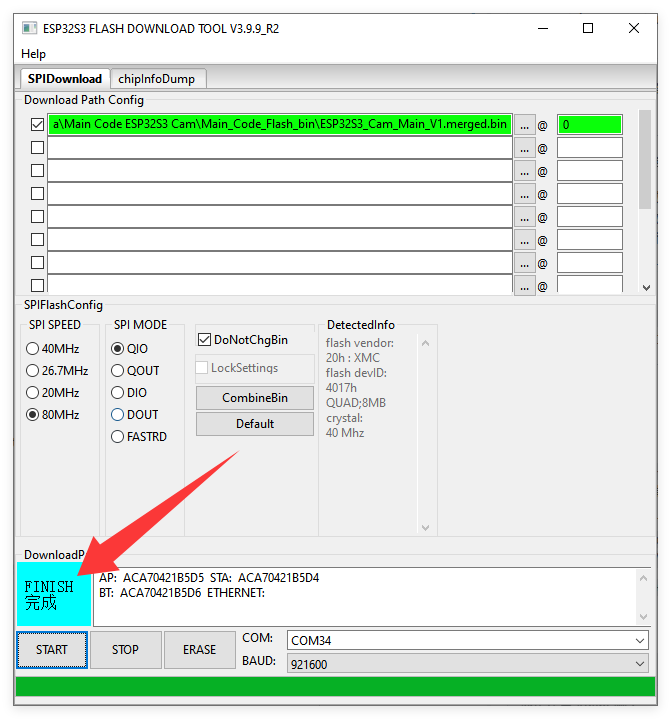
Note
If the upload fails, please check your USB cable, verify the COM port, and ensure no other program (like the Arduino IDE Serial Monitor) is currently using the port.
Step 5: Reset the Module
Press the RST (Reset) button on the ESP32 S3 Camera Module. The blue state LED will blink, indicating that the camera’s Wi-Fi is now in a connectable state.

Note
If the blue State LED does not blink, check if the camera is installed correctly.